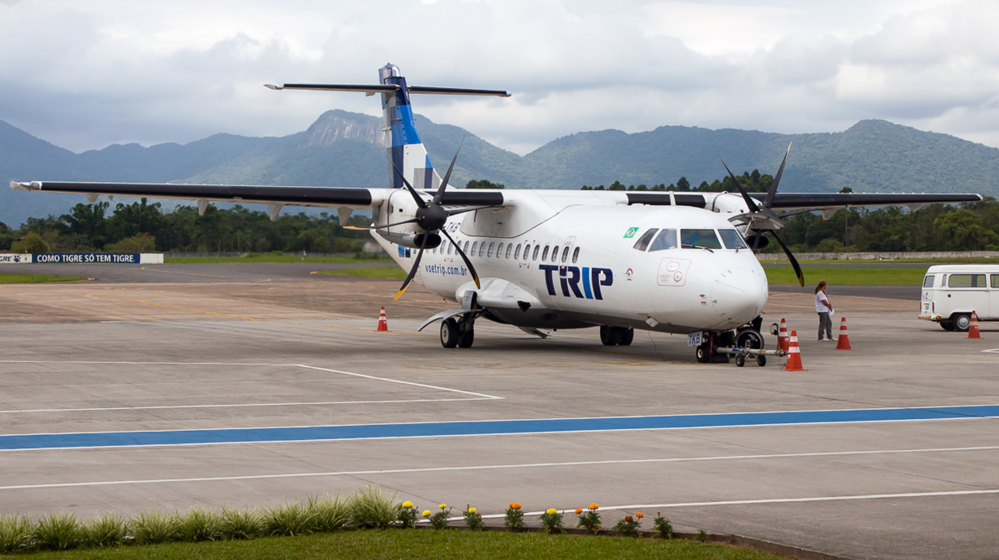
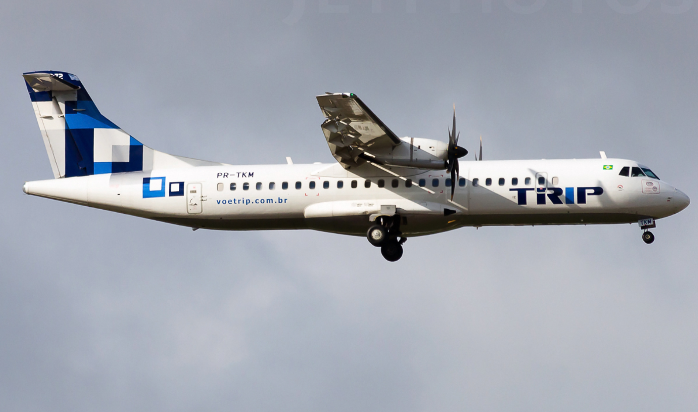
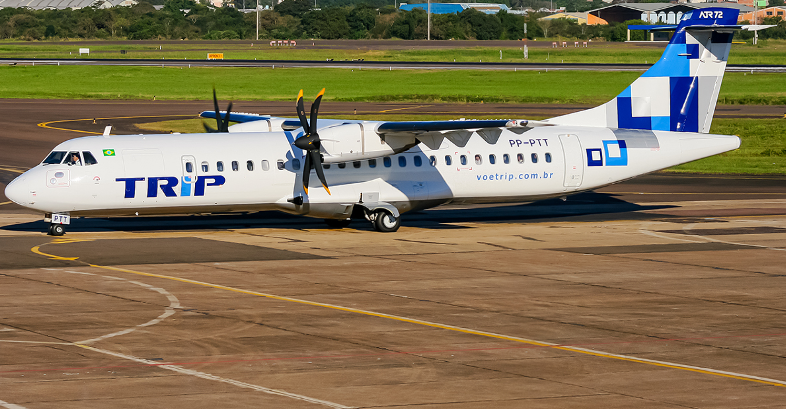
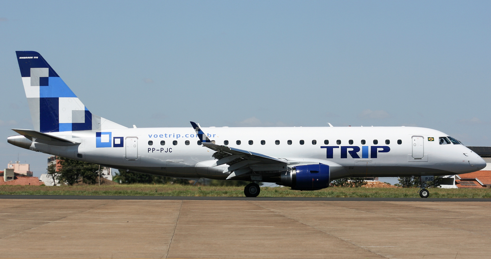
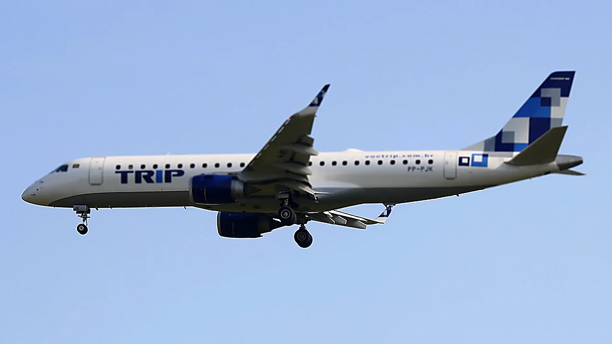
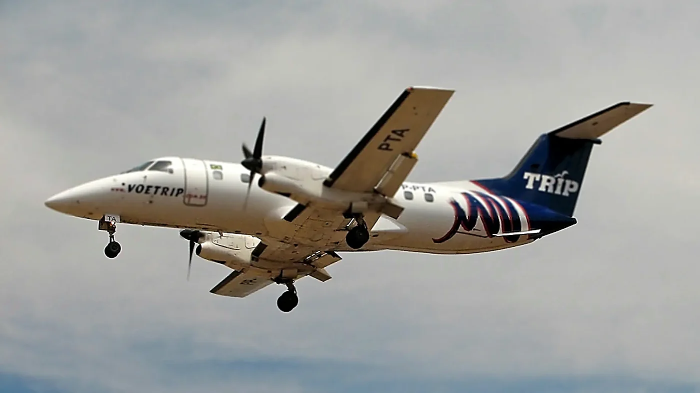

✈️ MSFS / X-Plane / P3D • IVAO & VATSIM
Viva a aviação brasileira no mundo virtual.
Carreira, rotas, rankings, eventos e comunidade. Entre hoje e comece a voar com a gente.
⌄Carreira, rotas, rankings, eventos e comunidade. Entre hoje e comece a voar com a gente.
⌄Aeronaves que operamos — (pause ao passar o mouse).






NOSSO MAPA É RESTRITO, SOMENTE PILOTOS PODEM ASSISTIR.
A TRIP Linhas Aéreas (Transporte Regional do Interior Paulista) nasceu em Campinas (SP) e marcou época na aviação regional brasileira. Fundada em 24/03/1998 e com início de operação em 01/09/1998, ficou conhecida por ligar cidades do interior e rotas regionais com eficiência e regularidade.
Em 28/05/2012 foi anunciada a união com a Azul, e em 06/03/2013 o CADE aprovou a operação com restrições. A marca TRIP foi gradualmente descontinuada e deixou de existir como marca independente por volta de 2014, com a integração à Azul.
A TRIP Virtual é a nossa homenagem: resgatar a identidade, a frota e o espírito da operação regional — agora no mundo virtual, com operação 100% pelo FlightLinQ.
1998 • Fundação e início das operações
2012 • Anúncio da união TRIP–Azul
2013 • Aprovação do CADE (com restrições)
2014 • Marca TRIP descontinuada como operação independente
1) Cadastro → 2) Escolhe rota → 3) Voa e envia PIREP.
Discord • Respeito • Realismo do seu jeito (leve ou hardcore).
Cartões simples (você troca nomes/cargos depois).
A TRIP Virtual opera 100% pelo FlightLinQ. Clique em Cadastrar agora para entrar direto na TRIP, ou em Operacional se você já tiver conta. Para voar no simulador, baixe o aplicativo do FlightLinQ.